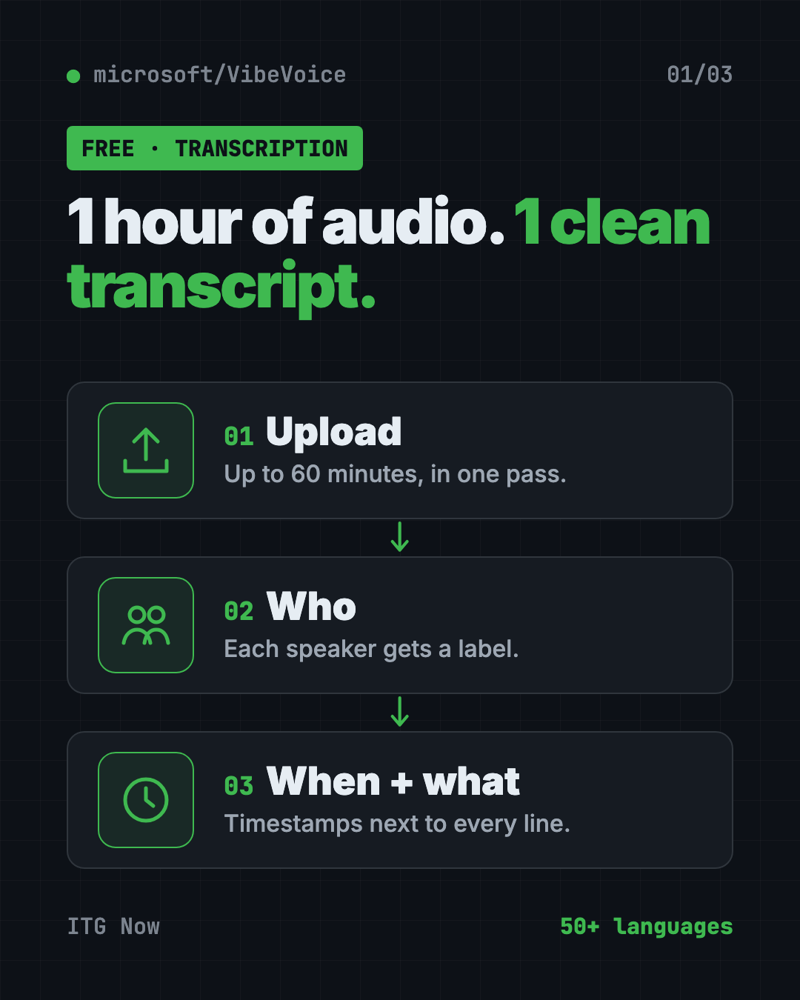
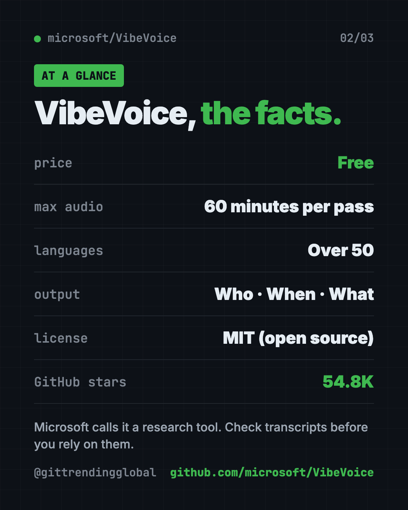
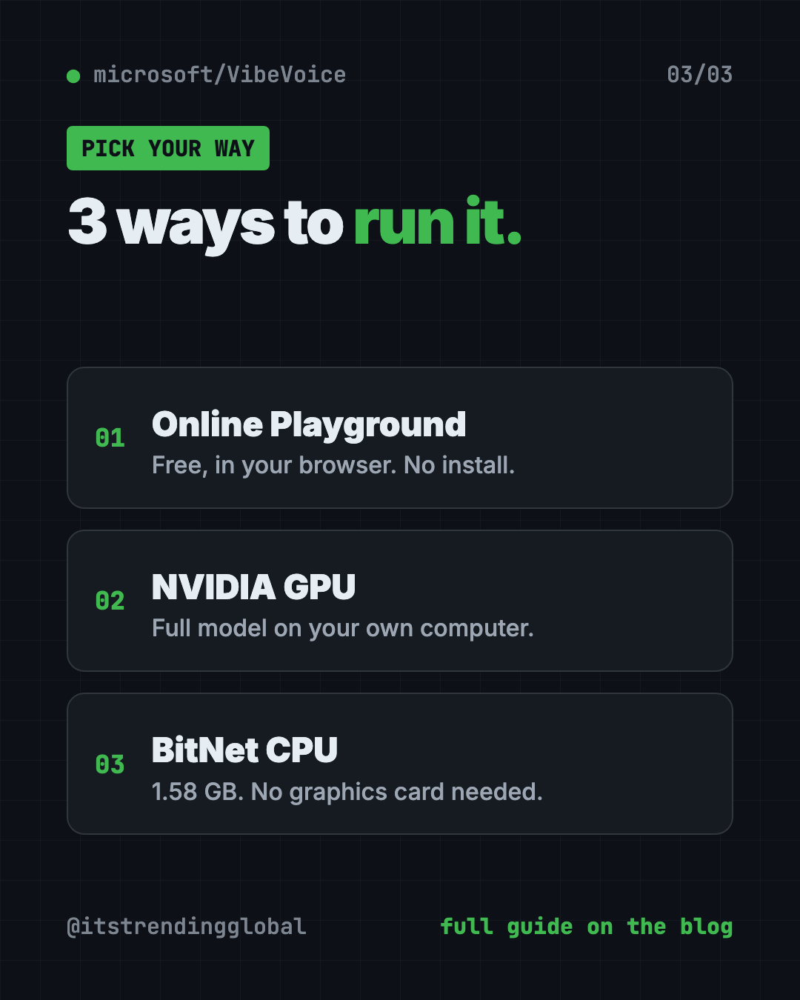

VibeVoice: Free AI Transcription Tool From Microsoft
- Published 15 Oct 2026
- Updated 16 Oct 2026
- 7 min read
- License MIT
- By the ITG Now team
In this guide (12)
VibeVoice is a free AI transcription tool from Microsoft that turns up to an hour of audio into text in one go. It also labels who spoke and when, so a long interview doesn't turn into one big wall of words.
This guide shows what it's good for, how to try it free in your browser, and how to run it yourself if you have the hardware.
Key takeaways
- Free and open source. MIT license, made by Microsoft.
- Handles 60 minutes at once. It doesn't chop the audio into tiny bits, so it keeps track of speakers across the whole hour.
- Who, when, what. Every transcript shows the speaker, the timestamp and the words.
- Over 50 languages. You don't even need to tell it which one you're speaking.
- Research tool, for now. Microsoft says not to use it in business products without more testing.
What is VibeVoice?
VibeVoice is a family of open-source voice AI models from Microsoft. A model is the trained "brain" that does the AI work.
The one most people want is VibeVoice-ASR. ASR means automatic speech recognition, which is just a fancy name for turning speech into text.
Most transcription tools slice a recording into short chunks. Along the way, they lose track of who's talking. VibeVoice-ASR takes up to 60 minutes in a single pass. So it can keep each speaker straight from start to finish.
The family also has VibeVoice-Realtime, a small model that reads text out loud and starts speaking in about 300 milliseconds.

How to use VibeVoice (real examples)
- Podcast show notes. Upload a full episode. Get a transcript with each host labeled, then pull quotes for your post.
- Interview write-ups. Journalists and researchers can transcribe an hour-long interview and see exactly who said each line.
- Meeting records. Record a team call and get a transcript with timestamps, so you can jump to the part where the budget came up.
- Recorded lectures. Students can turn a class recording into searchable notes.
- Tricky names and terms. Give it "hotwords," like people's names or product terms. The README says this helps it get domain words right.
💡 Tip: Add the names of everyone in the recording as hotwords. Names are the words transcription tools most often get wrong.
What can VibeVoice do?
Here's what the README lists for the speech-to-text side:
- 60 minutes in one go. Up to an hour of continuous audio.
- Speaker labels and timestamps. It works out who's talking and when, all at once.
- Over 50 languages. It also handles people switching languages mid-sentence.
- Live transcription. A streaming version, released September 3, 2026, writes text while audio is still coming in. It supports 10 languages and custom hotwords.
- No graphics card version. VibeVoice-ASR-BitNet, released July 23, 2026, runs on a normal computer processor. It shrinks the model from 4.62 GB to 1.58 GB and runs in real time on 3 or more CPU threads.
- Also in Microsoft's cloud. You can test VibeVoice-ASR in Azure AI Foundry Labs.
Is VibeVoice free?
Yes. The code and models are free under the MIT license. The online Playground is also free to try.
Running it on your own computer costs nothing in software. But the full model needs a strong NVIDIA graphics card, which you may not have.
Can VibeVoice copy voices?
Not anymore, in this repo. In September 2025, Microsoft removed the code for VibeVoice-TTS, its long text-to-speech model. It said people were using it in ways it didn't intend. The TTS demo now shows as "Disabled."
Microsoft also warns that realistic AI voices can be misused for fake audio and fraud. It asks users to follow the law and to say when content is AI-made. We cover VibeVoice here for transcription only.
⚠️ Heads up: Microsoft says VibeVoice is "intended for research and development purposes only." It can produce unexpected, biased or wrong results. Always check important transcripts by hand.
VibeVoice at a glance
| Price | Free |
| Works offline | Yes, if you run it on your own computer |
| Platforms | Any browser for the Playground; local install needs an NVIDIA GPU, or the BitNet CPU version |
| License | MIT (open source) |
| Max audio | 60 minutes in one pass |
| Languages | Over 50 |
| Best for | Podcasters, journalists, researchers and teams with long recordings |

How to try VibeVoice in your browser
The easiest way needs no install at all.
- Go to the VibeVoice page on GitHub.
- Click the ASR Playground badge near the top (it opens aka.ms/vibevoice-asr).
- Upload a recording, up to 60 minutes long.
- Wait while it works.
- Read your transcript with speaker labels and timestamps.
How to install VibeVoice on your own computer
This part is for people comfortable with a terminal and a computer with an NVIDIA graphics card. These steps come from the official VibeVoice-ASR docs. Microsoft suggests using NVIDIA's ready-made PyTorch container (a sealed box with all the right parts inside).
Step 1. Start the container. Copy and paste this:
sudo docker run --privileged --net=host --ipc=host --ulimit memlock=-1:-1 --ulimit stack=-1:-1 --gpus all --rm -it nvcr.io/nvidia/pytorch:25.12-py3
Step 2. Inside the container, download and install VibeVoice. Copy and paste this:
git clone https://github.com/microsoft/VibeVoice.git
cd VibeVoice
pip install -e .
Step 3. Start the demo app with a simple web page. Copy and paste this:
apt update && apt install ffmpeg -y
python demo/vibevoice_asr_gradio_demo.py --model_path microsoft/VibeVoice-ASR --share
Or transcribe a file directly. Swap in the path to your own audio file:
python demo/vibevoice_asr_inference_from_file.py --model_path microsoft/VibeVoice-ASR --audio_files my-interview.mp3
No NVIDIA card? Look at the VibeVoice-ASR-BitNet version, linked in the README, which runs on a regular processor.
Let Claude or Codex set it up for you
Claude Code and OpenAI Codex are AI helpers that run in your Terminal. They can do the setup steps while you approve each one.
Copy and paste this:
Please help me run VibeVoice-ASR from github.com/microsoft/VibeVoice.
1. Check my computer: do I have an NVIDIA GPU, Docker and enough disk space?
2. If yes, follow the official docs/vibevoice-asr.md install steps.
3. If not, tell me about the VibeVoice-ASR-BitNet CPU version or the online Playground instead.
4. Explain each command in plain English before you run it.
5. Finish by transcribing one short test audio file.
Then try asking:
Transcribe interview.mp3 with VibeVoice and add the hotwords "Priya" and "Acme".
Turn this VibeVoice transcript into a short summary with the key quotes from each speaker.
Which VibeVoice model should I use on my laptop, and why?

Our take
VibeVoice-ASR does something many transcription tools struggle with. It keeps track of who's talking across a full hour. For long interviews and podcasts, that's a big deal.
What we like:
- Free and open, from a big lab.
- 60 minutes per pass, with speaker labels and timestamps.
- Over 50 languages, no setting needed.
- A free online Playground to try it first.
- A CPU version for people without a graphics card.
What to watch for:
- Microsoft calls it a research tool, not a finished product.
- The full model needs a strong NVIDIA GPU.
- Local setup is technical.
- Results can be wrong, so check before you publish.
Want something easier for everyday use? Handy is free offline voice typing for any app, and Meetily takes AI meeting notes on your computer. VibeVoice also made our GitHub trending list for the week of March 30.
FAQ
Is VibeVoice a free AI transcription tool?
Yes. VibeVoice is free and open source under the MIT license. You can also try it free in Microsoft's online Playground.
How long can a VibeVoice recording be?
VibeVoice-ASR handles up to 60 minutes of audio in a single pass.
Does VibeVoice label different speakers?
Yes. Its transcripts show who spoke, when they spoke and what they said.
Can I run VibeVoice without a graphics card?
Yes, with VibeVoice-ASR-BitNet. Microsoft says it runs in real time on a normal processor with 3 or more threads.
Can I use VibeVoice for my business?
The MIT license allows it, but Microsoft does not recommend it in commercial or real-world apps without more testing.
Get VibeVoice: github.com/microsoft/VibeVoice
More free voice and audio tools
- VoiceStudio VoiceStudio is a free ElevenLabs alternative. Clone a voice, dub videos and turn text into speech on your own Mac, Windows or Linux computer.
- Folia Folia is a free animated lyrics music player that shows full-screen moving lyrics for your local music, Navidrome and more. What it does and how to start.
- OpenReel OpenReel is a free online video editor with no watermark. Cut clips, add captions, mix music and export up to 4K, right in your web browser.
- Brag Brag is a free AI launch video maker. Type one command in Claude Code or Codex and it turns your project into a short video with music and share text.
- Meetily Meetily is a free AI meeting note taker. It transcribes your calls live and writes summaries on your own computer, so recordings never have to leave it.
- Open Notebook Open Notebook is a free NotebookLM alternative you run yourself. Chat with your PDFs and videos, get cited answers, and turn notes into podcasts.
Latest AI news
- Meta gives away its big Muse Spark AI for free
- Ai2 releases OlmoEarth v1.3, a satellite-imagery AI model
- Anthropic launches Claude Duet, an always-on AI agent
- Anthropic launches Claude Duet, a proactive AI agent
Keep reading

Folia: Free Animated Lyrics Music Player
Folia is a free animated lyrics music player that shows full-screen moving lyrics for your local music, Navidrome and more. What it does and how to start.